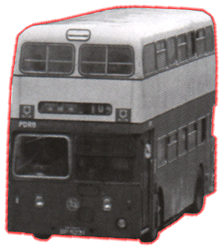
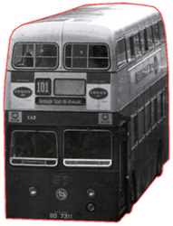
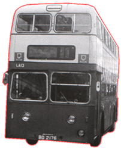

Leyland
- Atlantean PDR1/1
|  |
 |
 |
| 型號 Model
引擎 Engine
容積 Engine Capacity 波箱 Gearbox 車身 Body Build
體積 Volume
載客量 Passenger
登記年份 Year |
: PDR (1 - 12) HA (1 - 3) LA (1 - 18) [PDR (1 - 10, 12) 改為 LA (1 - 12)] XA (1 - 50) : Leyland 0600, 0680 & 0690 Series Gardner 6LX (150 bhp) : 不詳 : Leyland Semi-Automatic Gearbox : Park Royal (XA 1 -50) M.C.W. (LA 1 - 18)(HA 1 - 3)
: (PDR 1 - 12) U36 L34 S??? (HA 1 - 3) U44 L34 S??? (LA 13 - 18) U39 L34 S??? (XA 1 - 50) U41 L34 S??? : 1972 - 1981 |
Leyland Atlantean 面世於 1958 年， 英國第一代後置引擎雙層巴士，中巴於 1972 年率先引入首批總數 12 部的 PDR1/1 二手巴士， 車隊編號亦由最初 PDR 1-12 改為 LA 1-12，由於車子經常出現水滾情況，故此這批車只服務至 1976 年便退役。次批於 1973 年買入 3 輛高車身 (HA 1-3) & 6 輛矮車身 (LA 13-18) 二手 PDR1/1 ; 最後一批總數 50 輛二手 PDR1/1 (XA 1-50) 於別家英國巴士公司同年買入。這些巴士亦是由於當時中巴鬧車荒才購入，以補燃眉之急，其實車子的規格並不太適合香港行走，所以這些 PDR1/1服務時間亦不太長。